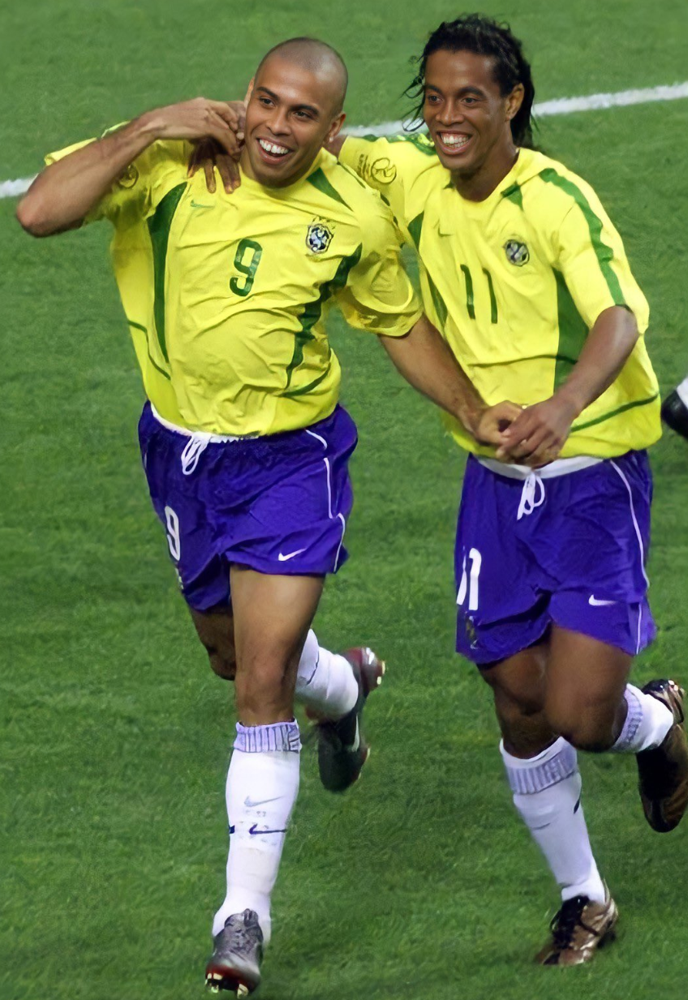

Mundial 1958, Primera Copa Del Mundo para brasil
En 1958, Brasil consiguió su primer título en Copas del Mundo, además de ser un campeón del mundo indiscutible, con un equipo conformado por 22 jugadores brillantes, titulares y suplentes, en cada posición. Por otra parte este Mundial vio el nacimiento de una estrella futbolística, un adolescente de tan solo 17 años llamado Edson Arantes do Nascimento, mejor conocido como "Pelé". En aquel entonces Pelé marcó en cuartos de final en la victoria 1:0 contra Gales, luego consiguió tres de los cinco goles con los que su selección se impuso a Francia 5:2 en las semifinales y anotó dos más en la final que se jugó el 29 de junio de 1958 en el Estadio Råsunda de Estocolmo.
En ese partido Brasil se encontró pronto con un marcador en contra ante el equipo anfitrión. Corrían solo 3 minutos de juego cuando Suecia marcó su primer tanto. Solo sería un espejismo porque aquella mágica noche Brasil consiguió, por un contundente 5:2, lo que llevaba años buscando: su primer Campeonato Mundial. Se coronaba como el primer campeón no europeo en Europa. Sin duda alguna la gran figura del partido fue Pelé ya que marcó 2 goles en aquella final y fue el máximo artillero de su selección con 6 goles. Otra distinción otorgada a Pelé fue la de Mejor Jugador Joven por la FIFA. También fue el Mundial de la consagración del fenomenal Garrincha, bien secundado por Didí, Vavá y Zagallo.
Segunda copa del mundo: bicampeones en 1962 en Chile
El segundo título mundial para los brasileños llegó en 1962 en Chile. Brasil nuevamente se corona campeón del mundo revalidando así el título conseguido en 1958. El astro del Mundial de 1958, Pelé, salió cojeando tras una lesión muscular sufrida en el segundo partido contra Checoslovaquia en la fase de grupos y se perdió el resto del campeonato. No obstante, los brasileños, comandados por Garrincha y Zagallo, aunque menos arrolladores que en Suecia, lograron clasificarse para los cuartos de final. En esa instancia derrotaron a la selección inglesa por 3:1. En semifinales vencieron al local Chile 4:2 y en la gran final, el Scratch volvió a encontrarse con la selección de Checoslovaquia. Tras ir perdiendo 1-0, logró voltear el marcador con goles de Amarildo, Zito y Vavá, y así se alzó con el bicampeonato mundial.Garrincha y Vavá quedaron entre los mejores anotadores del Mundial junto a Flórián Albert, Valentín Kozmich Ivanov, Dražan Jerković y Leonel Sánchez con 4 dianas cada uno.
Además de eso, los brasileños Carlos José Castilho y Nilton Santos se convirtieron en los primeros futbolistas que logrando participar en su cuarto y último mundial, llegaron hasta la gran final y se convirtieron en los primeros campeones veteranos y retirarse del fútbol poniendo fin a sus brillantes carreras.
Copa del Mundo México 1970: el tricampeonato
El tercer título mundial para los brasileños llegó en 1970, al presentarse con un equipo que es considerado como uno de los mejores de la historia. Antes de disputarse el Mundial, Pelé regresó a la selección nacional a pesar de haber hecho votos de no volver a disputar otro Mundial. Brasil se apoderó con autoridad del trofeo Jules Rimet, con jugadores de la categoría de Clodoaldo, Gérson, Rivelino, Tostao, Jairzinho, Pelé y Carlos Alberto. La final se disputó en el estadio Azteca de la Ciudad de México frente a unos 107.000 espectadores escenario donde Brasil se impuso a la selección de Italia por 4:1. Era la consagración de Pelé como único futbolista en el mundo en ganar 3 veces una Copa del Mundo. El máximo anotador de la selección brasileña en dicho torneo fue Jairzinho con 7 goles, seguido del propio Pelé con 4.
Al ser el primer equipo en adjudicarse tres veces el torneo, Brasil se quedó con la Copa en propiedad, cuando fue robada durante una exhibición en la sede de la Confederación Brasileña de Fútbol en Río de Janeiro. El trofeo nunca fue recuperado, pero fue diseñado una réplica por Eastman Kodak usando 1,8 kg (3,97 lb) de oro la cual fue presentada ante el Presidente de Brasil João Baptista Figueiredo en 1984
Regreso a la gloria en la Copa Mundial de 1994

Debieron pasar 24 años para que este equipo ganara su cuarto campeonato al derrotar a Italia en una recordada definición desde los doce pasos en 1994, siendo la primera vez que una final se decidía mediante esa vía. El fútbol se trasladó a los Estados Unidos, un país donde apenas despertaba pasiones, pero Brasil se encargó de ponerle el sabor y el ritmo de samba a la Copa del Mundo. Aquella selección brasileña era comandada por el técnico Carlos Alberto Parreira y estaba plagada de jugadores de categoría como: Cláudio Taffarel, Mauro Silva, Mazinho, Branco, Raí, Cafú, Romario, Bebeto, Dunga, Ronaldo y Leonardo. En aquella definición de tiros desde el punto penal, los jugadores italianos Franco Baresi, Daniele Massaro y el emblemático Roberto Baggio erraron sus disparos para un marcador final de 3:2 a favor de Brasil. Así, el equipo sudamericano, dirigido por Parreira, entró a la historia por todo lo alto al convertirse en el único tetracampeón mundial. El jugador Romario fue uno de los más destacados de Brasil anotando 5 goles y recibiendo por parte de la FIFA el premio Balón de Oro que lo acreditaba como el mejor jugador del torneo y del mundo.
PENTACAMPEONES DEL MUNDO
En la última fecha Brasil logró su clasificación como tercer puesto detrás de Argentina y Ecuador con 30 puntos, tras golear 3:0 a Venezuela, siendo así la peor eliminatoria en la historia de Brasil, por el alto número de derrotas en una clasificación todos contra todos.
Llegaba la Copa Mundial de Fútbol de 2002 y Brasil tenía grandes expectativas por tener en su nómina a jugadores de primer nivel. Impulsados por el juego brillante de los "Tres R" (Ronaldo, Rivaldo y Ronaldinho) y Kaká, Brasil ganó su quinto campeonato en la Copa Mundial de Fútbol de 2002 celebrada en Corea del Sur y Japón.En la primera fase, Brasil compartió el grupo C junto con Turquía, China y Costa Rica. En este grupo Brasil ganaría todos sus encuentros y quedaría primera con 9 puntos y +8 en goles a favor. Ganó sus encuentros de octavos de final ante Bélgica (2:0), cuartos ante Inglaterra (2:1) y semifinales ante Turquía (1:0) hasta fraguarse un lugar en la final.
La final opuso dos de los equipos más exitosos en la historia de la competición: Alemania y Brasil. El portero alemán Oliver Kahn había sido el mejor jugador del torneo, pero no fue capaz de mantener imbatible su portería. De esta manera Ronaldo venció los fantasmas de Francia 1998 y anotó los dos goles del triunfo. El resultado final fue 2:0 y Brasil sumaría su quinta Copa Mundial.